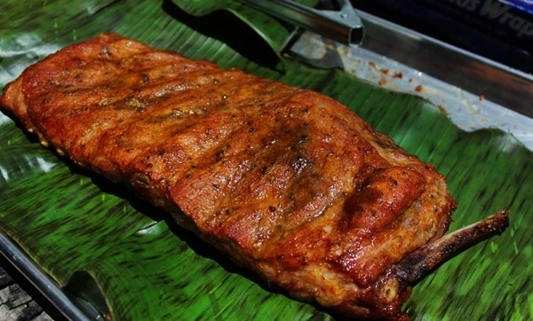

Costillas de cerdo
Se mueven para que la sal se esparza por toda el agua y las costillas
Se lleva la sartén a fuego alto hasta que se evapore toda el agua
Mientras las costillas se cocinan, se pican los tomates y la cebolla en trozos pequeños, reservándolos para más adelante
Se debe estar atento a las costillas, volteándolas para que se cocinen uniformemente por todos los lados
Cuando casi no quede agua en la sartén, empezará a soltarse la grasa de las costillas
En este punto, se deben freír y dorar las costillas hasta que estén bien doradas
Luego se añaden los tomates, la cebolla, la sal y la pimienta al gusto, mezclando bien todos los ingredientes
Se tapa la sartén y se cocina por aproximadamente 10 minutos a fuego medio
Una vez listo, se sirve acompañado de arroz